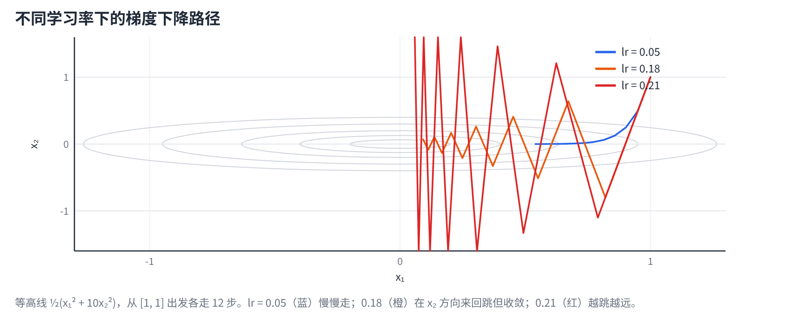
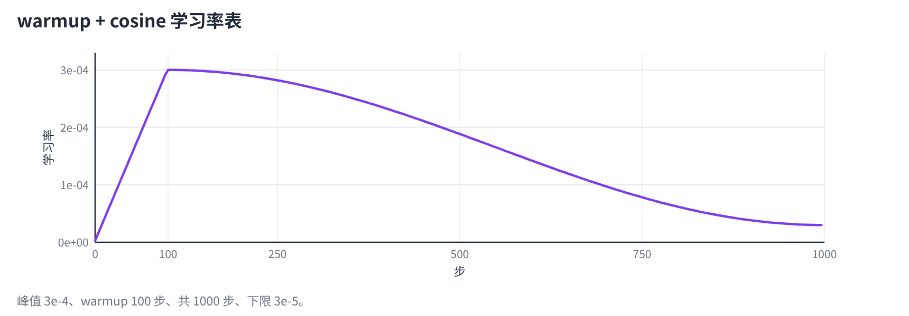
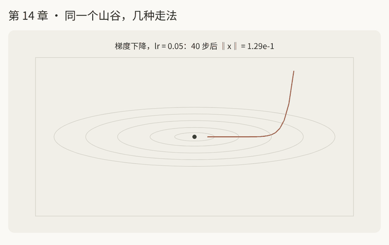

第 14 章 · 无约束优化：步长、动量、Adam / AdamW、学习率表、高斯-牛顿与 LM
本地运行
git clone https://github.com/wikieden/math-and-eval-stats
cd math-and-eval-stats/code/notebooks
pip install jupyterlab torch numpy
jupyter lab ch14_unconstrained_optimization.ipynb也可以下载后直接用 VS Code 打开 .ipynb 运行。需要 GPU 的章节在 Colab 里选「代码执行程序 → 更改运行时类型 → GPU」。
本章回答：学习率为什么不能随便调大？动量在帮什么忙？Adam 为什么对每个参数"自动调步长"，AdamW 又改了什么？warmup + cosine 怎么写？拟合问题里高斯-牛顿为什么快、LM 为什么稳？
讲解日期：2026-11-25 · 上一章：第 13 章 多元微积分与自动微分 · 下一章：第 15 章 约束与凸优化
对应原文：MMLmaterials/text/books/mml-book.txt§7.1 L12726 起（§7.1.2 动量 L12884）；Boydmaterials/text/books/boyd-convex-optimization.txt§9.2–9.3（目录 L158–L159，正文约 L23544 起）、§9.5 牛顿法（目录 L161，正文约 L24554 起）；Adammaterials/text/papers/adam-1412.6980.txtAlgorithm 1 L75 起；AdamWmaterials/text/papers/adamw-decoupled-weight-decay-1711.05101.txt摘要 L30–L35、Algorithm 2 L155 起
本章缩写：GD = Gradient Descent（梯度 / 下降）；lr = learning rate（学习率）；L = 最大曲率（Lipschitz 常数：梯度变化最快的程度）；κ = 条件数；Adam = Adaptive moment estimation（自适应 / 矩 / 估计）；AdamW = Adam with decoupled Weight decay（解耦权重衰减的 Adam）；wd = weight decay（权重衰减）；LM = Levenberg–Marquardt（两位数学家的姓：带阻尼的高斯-牛顿）；J = Jacobian（雅可比）；SSE = Sum of Squared Errors（残差平方和）。全部缩写见 附录 · 缩写与术语表
讲解
第一步：梯度下降的步长：不能超过 2/L（2026-11-25）
类比：在山谷里蒙眼下山，每一步迈多大。 步子太小走得慢；步子太大会跨过谷底，到对面更高的地方，越跨越高。
二次函数 \(f(x) = \frac12x^\top Hx\) 上，每个特征方向（曲率 λ）每步乘上 \(1 - \eta\lambda\)。要所有方向都收敛，需要 \(|1 - \eta\lambda| < 1\)，即 \(\eta < 2/L\)（L = 最大曲率）。
例子：\(f = \frac12(x_1^2 + 10x_2^2)\)，L = 10，2/L = 0.2，从 [1, 1] 出发，走到 ‖x‖ < 10⁻³：
| 学习率 | 结果 |
|---|---|
| 0.05 | 135 步 |
| 0.18 | 36 步 |
| 0.21 | 发散 |
学习率最大只能到 0.2，由"最陡"的那个方向决定；可在平的方向（曲率 1）上，每步只缩 1 − 0.18 = 0.82。条件数 κ = 10 越大，"陡的不让快、平的走不动"越严重。

图 14-1 · 等高线是 ½(x₁² + 10x₂²)；lr = 0.05 慢慢走，lr = 0.18 沿陡的方向来回跳但收敛，lr = 0.21 越跳越远一句话：学习率要小于 2/L（最陡方向决定）；条件数大时，平的方向收敛很慢。
第二步：动量：在窄谷里少走之字（2026-11-25）
类比：滚下山的球带着惯性。 来回跳的方向上，前后两步方向相反，惯性互相抵消；一直往下的方向上，惯性越积越大。
（MML §7.1.2，L12884）
例子（同一个函数，lr = 0.05）：
| 动量 β | 收敛步数 |
|---|---|
| 0 | 135 |
| 0.5 | 59 |
| 0.8 | 56 |
一句话：动量把过去的梯度累积起来，平的方向加速、来回跳的方向抵消。
第三步：Adam 与 AdamW：每个参数自己调步长，权重衰减要解耦（2026-11-25）
类比：给每个人发一双合脚的鞋。 梯度大的参数步子缩小，梯度小的参数步子放大。
Adam（Algorithm 1，L75 起）：
\(\hat m = m/(1-\beta_1^t)\)、\(\hat v = v/(1-\beta_2^t)\) 是偏差修正（开头 m、v 从 0 起步，偏小）。
例子（第一步，lr = 10⁻³）：梯度 [0.1, 10] → 更新量 [0.001, 0.001]。第一步时 \(\hat m/\sqrt{\hat v} = g/|g| = \pm1\)：每个坐标都走 lr，和梯度大小无关。
AdamW（摘要 L30–L35、Algorithm 2 L155）：在 Adam 里加 L2 正则（把 wd·x 加进梯度），这一项也会被 \(\sqrt{\hat v}\) 除掉，大梯度的参数几乎得不到衰减；AdamW 把衰减拿到外面，直接 \(x \leftarrow x - \eta\cdot wd\cdot x\)。
| wd = 0.1，起点 [1, 1]，梯度 [0.1, 10] | 第一步后 |
|---|---|
| AdamW（解耦） | [0.9989, 0.9989] |
| Adam + L2 | [0.999, 0.999]（衰减被归一化"吃掉"了） |
一句话：Adam 按梯度的二阶矩归一化，每个参数步长约 lr；AdamW 把权重衰减从梯度里拿出来单独做。
第四步：学习率表与梯度裁剪（2026-11-25）
warmup + cosine：开头几百步从很小线性涨到峰值（让 Adam 的 v 先估准、让早期的大梯度别把参数甩飞），然后按余弦降到一个下限：
| 步 | 0 | 50 | 99 | 100 | 550 | 999 |
|---|---|---|---|---|---|---|
| 学习率（峰值 3e-4、warmup 100、共 1000 步） | 3.0e-6 | 1.53e-4 | 3.0e-4 | 3.0e-4 | 1.65e-4 | 3.0e-5 |
梯度裁剪：梯度范数超过门槛就按比例缩小，方向不变。[3, 4]（范数 5）裁到 1 → [0.6, 0.8]。防止一次异常大的梯度（loss spike）把参数甩出去（第 44 章）。

图 14-2 · 前 100 步线性上升到 3e-4，之后余弦下降到 3e-5场景代码：PyTorch 里的真实写法（本书环境没装 torch，没跑过）：
opt = torch.optim.AdamW(model.parameters(), lr=3e-4, betas=(0.9, 0.95), weight_decay=0.1)
sched = torch.optim.lr_scheduler.LambdaLR(opt, lambda s: warmup_cosine(s) / 3e-4) # 返回相对峰值的倍数
torch.nn.utils.clip_grad_norm_(model.parameters(), max_norm=1.0) # 每步 backward 之后、step 之前
一句话：warmup 先慢后快，cosine 平滑降到下限；梯度裁剪按范数缩放，防止一步甩飞。
第五步：高斯-牛顿与 LM：拟合问题的二阶方法（2026-11-25）
类比：牛顿法是"照着地形的弯曲程度一步跳到底"，高斯-牛顿是"把非线性函数在当前点拉直，解一个最小二乘"。
拟合 \(\min\sum_i r_i(\theta)^2\) 时，把残差在当前点线性化 \(r(\theta + \Delta) \approx r + J\Delta\)，解线性最小二乘（第 12 章）：
\(J^\top J\) 是 Hessian 的近似（省掉了二阶导那一项），不用算二阶导。LM 加阻尼 λ：这一步让残差变小就接受并减小 λ（更像高斯-牛顿），变大就拒绝并加大 λ（更像小步的梯度下降）。
例子（编的 5 个点，拟合 y = a·e^{bx}，从 a = 1、b = 0.5 出发）：
| 步 | 高斯-牛顿 SSE | LM SSE |
|---|---|---|
| 0 | 212.48 | 212.48 |
| 1 | 30635.95（跳过头） | 12.71 |
| 2 | 2006.93 | 1.76 |
| 4 | 1.43 | 0.545 |
| 6 | 0.0023 | 0.0269 |
高斯-牛顿第一步离初值太远时线性近似失效，跳到很差的地方，但收敛后极快；LM 每步都变好，稳妥。SLAM 的光束法平差（第 55 章）、相机标定、机械臂 IK 都用 LM。
一句话：高斯-牛顿用 JᵀJ 近似 Hessian，快但可能跳过头；LM 加阻尼、变差就拒绝，每步都下降。
动画演示：同一个山谷，四种走法

可交互版：animations/14-unconstrained-optimization.html（滑块调学习率和动量 β；下拉选 GD / 动量 / Adam）。
怎么看：
- 椭圆等高线是 ½(x₁² + 10x₂²)，从 [1, 1] 出发的路径一步步画出来（第一步）；
- 学习率拖过 0.2：路径沿 x₂ 方向越跳越远（第一步）；
- 加动量：之字变少、更快到中心（第二步）；
- Adam：前几步每个坐标都走差不多同样大的步子，路径接近 45° 斜线（第三步）。
练习与作答记录
题 1（第一步）：\(f = \frac12(4x_1^2 + x_2^2)\)。梯度下降最大能用多大的学习率？用 lr = 0.25 时，x₁ 和 x₂ 每步各乘多少？
作答：（待作答）
题 2（第三步）：Adam 第一步时梯度是 [0.001, −50]，lr = 0.01。两个坐标各走多少（忽略 ε）？这说明 Adam 第一步的步长和什么无关？
作答：（待作答）
题 3（第四、五步）：warmup 1000 步、峰值 1e-3、总共 10000 步、下限 1e-4，第 500 步和第 5500 步的学习率各是多少？
作答：（待作答）
口诀
步长小于二除 L，最陡方向说了算；
动量像滚球，来回抵消、一路加速；
Adam 按二阶矩归一，每步约走 lr；AdamW 衰减拿出来单做；
先 warmup 后余弦，裁剪按范数；拟合用高斯-牛顿，怕跳过头就加阻尼成 LM。
本章复习卡片
ST56（学习率上限 2/L 与条件数）、ST57（Adam 更新式与 AdamW 的区别）、ST58（warmup + cosine、梯度裁剪）、ST59（高斯-牛顿与 LM 的公式和区别）。练习做完后，按答错、卡住的地方补上。
附录 · 延伸阅读
留给以后深入学习用，不影响本章主线。★ 是建议先读的。
推荐阅读
| 读什么 | 读哪里 | 读它为了什么 |
|---|---|---|
| ★ Adam（Kingma & Ba 2014） | Algorithm 1 L75 起；§2–3 | 一阶矩、二阶矩、偏差修正 |
| ★ AdamW（Loshchilov & Hutter 2017） | 摘要 L30–L35；Algorithm 2 L155 起 | L2 正则和解耦权重衰减在 Adam 里为什么不等价 |
| ★ MML | §7.1 L12726–L13039 | 梯度下降、步长、动量 |
| Boyd | §9.2–9.3、§9.5（目录 L158–L161） | 下降方法的收敛分析、牛顿法 |
| 《PyTorch 从里到外》优化器章节 | 优化器、学习率调度 | 框架里怎么实现、参数组怎么分 |
数学原理
- 二次函数上 GD 的收敛：沿特征方向 i，误差每步乘 \(1 - \eta\lambda_i\)；最优固定步长 \(\eta = 2/(\lambda_{\min} + \lambda_{\max})\)，收敛率 \((\kappa - 1)/(\kappa + 1)\)。
- Adam 第一步：t = 1 时 \(\hat m = g\)、\(\hat v = g^2\)，更新量 \(\eta g/|g|\)，就是 signSGD。
- 高斯-牛顿的 Hessian 近似：\(\nabla^2\frac12\|r\|^2 = J^\top J + \sum_i r_i\nabla^2r_i\)；残差小或 r 接近线性时第二项可忽略。
- LM 的两个极端：λ → 0 是高斯-牛顿；λ → ∞ 时 \(\Delta \approx -J^\top r/\lambda\)，是步长 1/λ 的梯度下降。
公式清单
| 公式 | 意思 |
|---|---|
| \(\eta < 2/L\) | GD 收敛的步长上限 |
| \(v \leftarrow \beta v + g\)，\(x \leftarrow x - \eta v\) | 动量 |
| \(x \leftarrow x - \eta\hat m/(\sqrt{\hat v} + \epsilon)\)；AdamW 再减 \(\eta\,wd\,x\) | Adam / AdamW |
| \(\eta_t = \eta_{\min} + \frac12(\eta_{\max} - \eta_{\min})(1 + \cos\pi p)\) | cosine 学习率 |
| \((J^\top J + \lambda I)\Delta = -J^\top r\) | LM（λ = 0 为高斯-牛顿） |
代码对照：把本章的数字用代码算一遍
代码在仓库本地
math-and-eval-stats/solutions/chapter-code/ch14_optimization.py，配套测试tests/test_ch14.py：
bash cd math-and-eval-stats/solutions/chapter-code uv run python ch14_optimization.py uv run pytest tests/test_ch14.py
讲义 ↔ 代码：
| 讲义 | 公式 | 写法 | 跑出来 |
|---|---|---|---|
| 第一步 GD | x − ηHx | gd(0.18, 500) |
36 步；lr = 0.21 发散 |
| 第二步 动量 | v = βv + g | gd(0.05, 2000, 0.5) |
59 步 |
| 第三步 Adam | Algorithm 1 | adam_step(...) |
更新 [0.001, 0.001] |
| 第三步 AdamW | 解耦衰减 | adam_step(..., wd=0.1, decoupled=True/False) |
0.9989 / 0.999 |
| 第四步 学习率表 | warmup + cosine | warmup_cosine(550) |
1.65e-4 |
| 第五步 GN / LM | (JᵀJ + λI)Δ = −Jᵀr | gauss_newton()、levenberg_marquardt() |
第 1 步 30636 / 12.7 |
关键几行：
m = b1 * m + (1 - b1) * g; v = b2 * v + (1 - b2) * g * g
x = x - lr * (m / (1 - b1**t)) / (np.sqrt(v / (1 - b2**t)) + eps) # Adam
x = x - lr * wd * x # AdamW：衰减在归一化之外
da, db = np.linalg.solve(j.T @ j + lam * np.eye(2), -j.T @ r) # LM 一步
代码里才看得到的 3 件事：
- 偏差修正只在开头重要：t = 1 时 m 只有 0.1g（小 10 倍）、v 只有 0.001g²（\(\sqrt v\) 小约 32 倍），不修正的话第一步会走约 3.2 倍的 lr；几千步后修正项接近 1。
- LM 的拒绝循环：
while True里不断加大 λ 直到这一步真的变好；所以 LM 的"一步"可能解了好几次线性方程。 gd里的发散判断：‖x‖ > 10⁶ 或出现 inf / nan 就提前返回，否则 0.21 的学习率会跑出浮点范围。
自己改一改（不影响练习答案）：
- 把
H改成 diag(1, 100)（条件数 100），lr 最大能用多少？lr = 0.019 要多少步？ - 高斯-牛顿从 a = 1.5、b = 1.0 出发（离答案更近），还会跳过头吗？